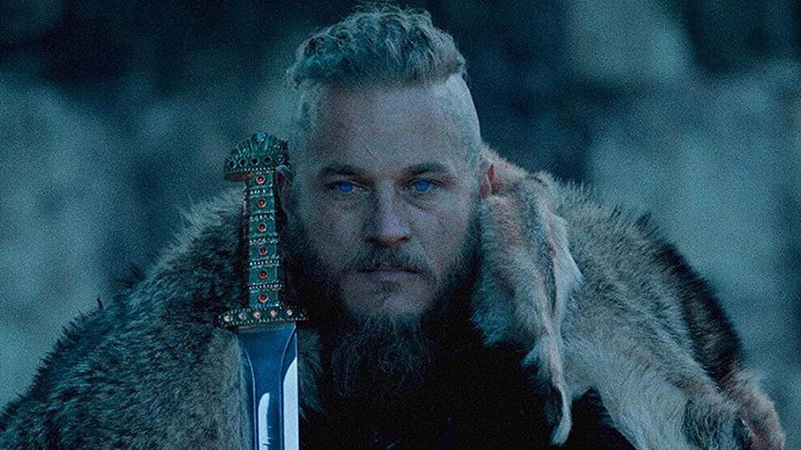

Протягом багатьох років, чутки про таємничий скарб короля Гаральда ходили серед вікінгів. Говорили, що цей скарб складався з найбільшого нагромадження золота, срібла та коштовностей, яке коли-небудь бачили на півночі. Чутки сяяли міфічним блиском, але ніхто не мав точної інформації про те, де саме скарб знаходився. У цьому загадковому місці була інша легенда, яка говорила про величезну кам'яну скульптуру, створену королем Гаральдом і встановлену десь у глибокому лісі. Вікінги вважали, що ця скульптура була ключем до скарбу.
 І так, вікінги вирушили в експедицію, надіючись знайти цю скульптуру та скарб короля Гаральда. Їхня подорож велася через важкодоступні ліси, надзвичайно небезпечні фьорди і суворий північний клімат. Під час своєї подорожі вони зустріли багато випробувань, але були вперті та відважні, і ніщо не могло зупинити їхній пошук. І незважаючи на всі труднощі, вони продовжували шукати сліди цієї загадкової скульптури, вірячи, що скарб короля Гаральда дійсно існує та чекає на тих, хто має сміливість його знайти. назад